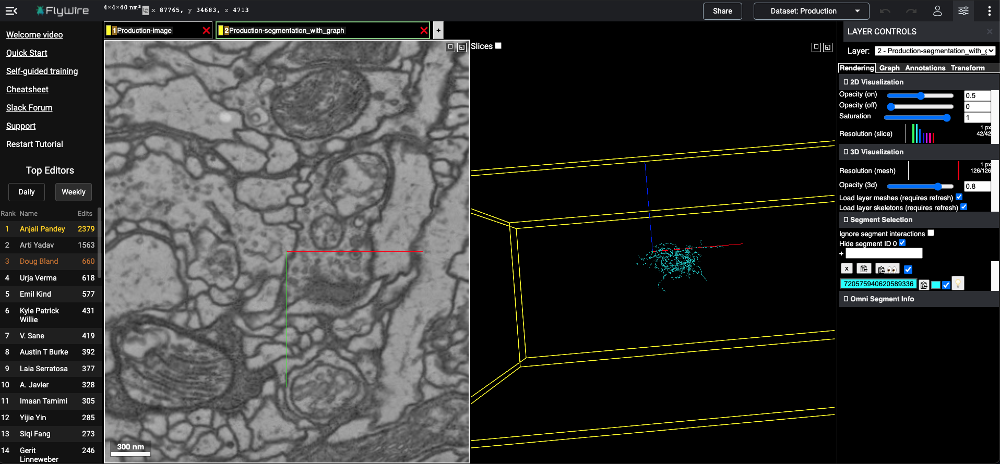
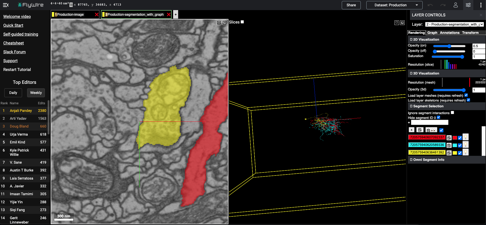

Examples of different co-plotting with flywire
This section contains several examples of different ways of manipulating flywire instances and co-plotting neurons, synapses as annotations
Import neccesary library modules now
[1]:
import navis
import fafbseg
import pymaid
[2]:
import pandas as pd
import numpy as np
import os
from copy import deepcopy
import glob
[3]:
from pyroglancer.flywire import flywireurl2dict, add_flywirelayer
Example 1: Add segments to empty config in flywire..
[4]:
layer_kws = {'type': 'segments',
'segmentid': 720575940620589336,
'color': 'cyan','alpha': 0.8
}
[5]:
flywireurl = add_flywirelayer(layer_kws=layer_kws)
flywire url at: https://ngl.flywire.ai/?json_url=https://globalv1.flywire-daf.com/nglstate/4557723320451072

[6]:
#add some more now..
layer_kws = {'type': 'segments',
'segmentid': [720575940638461392,720575940607092337],
'color': ['yellow', 'red']}
[7]:
flywireurl = add_flywirelayer(flywireurl2dict(flywireurl), layer_kws)
flywire url at: https://ngl.flywire.ai/?json_url=https://globalv1.flywire-daf.com/nglstate/5112535262953472
